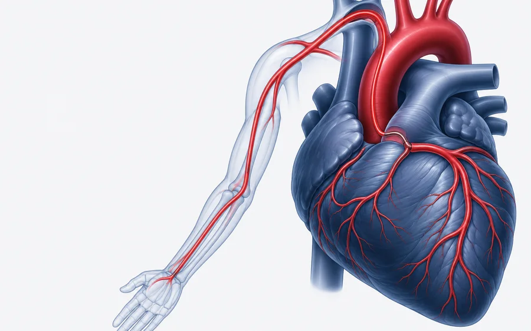
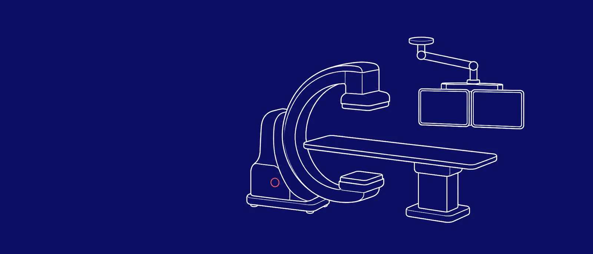
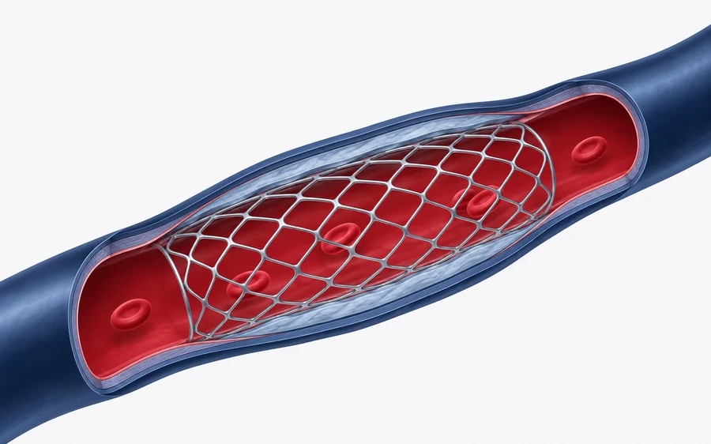
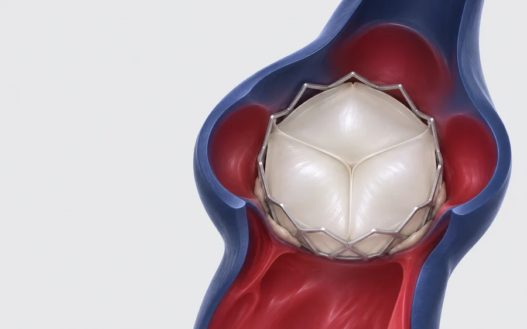

Diagnóstico
Cateterismo cardíaco
O exame que mostra, com contraste, onde estão as obstruções nas artérias do coração. Na maioria das vezes é feito pelo punho, com o paciente acordado e sedado.
Coronariografia

Cateterismo, angioplastia, TAVI e outros procedimentos por cateter nos hospitais Mater Dei de Belo Horizonte. Desde 2014.
A CardioInterv está em quatro hospitais da rede Mater Dei, em Belo Horizonte e região metropolitana. Cada laboratório de hemodinâmica tem estrutura completa e a mesma equipe por trás. Assim, o paciente é atendido perto de casa, seja num exame programado, seja numa urgência, sem abrir mão da qualidade.
Equipamentos modernos, com protocolos pensados para garantir a melhor imagem com a menor dose de radiação possível. Mais segurança para o paciente e para a equipe, com imagens nítidas para decidir e tratar no mesmo procedimento.
Quando a angiografia não basta, usamos IVUS, OCT e FFR. Esses exames mostram o tamanho real do vaso e se a obstrução de fato prejudica o fluxo. O stent só entra quando é necessário, e no tamanho certo.
Preferimos a via radial, pelo punho. O risco de sangramento é menor, o paciente se levanta mais cedo e a recuperação é mais confortável.
Quem chega para um exame do coração costuma estar ansioso. Por isso a equipe explica cada etapa antes de começar, e o ambiente da sala é preparado para trazer mais tranquilidade.



Fazemos 28 procedimentos diferentes, de exames diagnósticos a tratamentos que antes exigiam abrir o tórax. Estes três são os que mais nos procuram.
A diferença entre as duas curvas diz se a obstrução prejudica o fluxo de sangue. É isso que decide, no mesmo exame, se o stent é necessário.

O exame que mostra, com contraste, onde estão as obstruções nas artérias do coração. Na maioria das vezes é feito pelo punho, com o paciente acordado e sedado.
Coronariografia
O tratamento que abre a artéria com um balão e deixa um stent no lugar para mantê-la aberta. Quando o cateterismo encontra uma obstrução importante, os dois podem acontecer no mesmo procedimento.
Angioplastia coronária
A troca da válvula aórtica por cateter, sem abrir o peito. Indicada principalmente para pacientes com estenose aórtica e risco cirúrgico mais alto, com recuperação bem mais rápida que a cirurgia convencional.
Implante transcateter de valva aórticaTratamento por cateter para a insuficiência mitral, quando a válvula não fecha direito e o sangue volta. Um pequeno clipe une as bordas da válvula e reduz o vazamento, sem abrir o peito. Indicado principalmente para quem tem risco cirúrgico alto.
Para a estenose mitral, quando a válvula está estreitada. Um balão levado por cateter abre a válvula por dentro e melhora a passagem do sangue, com recuperação rápida.
Muitos pacientes têm dor no peito mesmo com as artérias limpas no cateterismo. Testes de função coronariana, feitos no mesmo exame, mostram se a causa está nos pequenos vasos do coração ou em espasmos das artérias. Com o diagnóstico certo, o tratamento passa a ser direcionado.
Fechamento por cateter de comunicações que não deveriam existir no coração, como CIA, forame oval patente (FOP) e canal arterial. Uma prótese é posicionada pela virilha e fecha o defeito, sem cirurgia e com alta rápida.
O cateterismo direito é o exame que confirma a hipertensão pulmonar e ajuda a descobrir a causa. Quando a causa pode ser tratada por cateter, como na doença tromboembólica crônica, fazemos o tratamento com a angioplastia das artérias pulmonares.
Exame que mapeia as artérias do coração e mostra onde estão as obstruções.
Imagens de altíssima resolução feitas de dentro da artéria. Servem para planejar a angioplastia e conferir se o stent ficou bem expandido.
Mede a pressão antes e depois da obstrução para saber se ela realmente reduz o fluxo de sangue e precisa de tratamento.
Avaliam a microcirculação do coração, o espasmo das artérias e as pontes miocárdicas, causas de dor no peito que o cateterismo comum não mostra.
Medida direta da pressão dentro das câmaras do coração.
Mostra como a circulação dos pulmões responde a medicamentos. Ajuda a definir o tratamento da hipertensão pulmonar.
Mede fluxos e pressões em alterações do coração presentes desde o nascimento.
Exame com contraste dos vasos do pulmão, para diagnosticar coágulos, embolia e malformações.
Imagem da aorta, a maior artéria do corpo, para identificar aneurismas, placas e outras alterações.
Retirada de fragmentos muito pequenos do músculo do coração para diagnosticar miocardite, rejeição de transplante e doenças raras.
Desobstrução das artérias do coração com balão e implante de stent.
Uma broca muito fina desgasta placas de cálcio duras demais para o balão. Depois disso, o stent consegue ser implantado com segurança.
Troca da valva aórtica por cateter, sem cirurgia de peito aberto.
Implante de uma nova valva por cateter dentro de uma prótese mitral biológica que se desgastou.
Um balão é inflado dentro da valva estreitada para abri-la.
Reparo da valva mitral por cateter, para reduzir o refluxo de sangue dentro do coração.
Correção por cateter da valva tricúspide que não fecha direito.
Fechamento por cateter de pequenos vazamentos de sangue ao redor de uma prótese de valva.
Fechamento por cateter de uma pequena cavidade do coração onde se formam coágulos. Previne AVC em pacientes com fibrilação atrial.
Fechamento por cateter de orifícios nas paredes internas do coração, sem cirurgia.
Correções por cateter de alterações presentes desde o nascimento, como atriosseptostomia e angioplastia do canal arterial.
Redução controlada do excesso de músculo que obstrui a saída de sangue do coração.
Desobstrução por cateter das artérias dos pulmões em tromboembolismo pulmonar agudo ou crônico.
Desobstrução das artérias que levam sangue aos rins e aos órgãos do abdome.
Tratamento de artérias entupidas nas pernas e nos braços. Alivia a dor ao caminhar.
Um tubo reforçado é colocado por cateter dentro da artéria dilatada para evitar que ela se rompa.
Redução do fluxo de sangue para a próstata aumentada, tratando o crescimento benigno sem cirurgia convencional.
Bloqueio dos vasos que alimentam o mioma. Diminui o sangramento e preserva o útero.
Recebeu um pedido de exame e quer entender o que vai ser feito? Pode perguntar.
Um dos médicos da equipe fala com você sobre o preparo, os cuidados e o que vai acontecer na sala.
Exames eletivos podem ser marcados à noite e nos fins de semana, combinando com você e com o seu cardiologista.
No laboratório de hemodinâmica, pelo punho sempre que possível. Se houver dúvida sobre a necessidade de stent, a FFR é medida ali mesmo, no mesmo exame.
Você sai com as orientações de cuidado em casa, e o seu cardiologista recebe o retorno da equipe.
A equipe se formou em 2014 com médicos que já trabalhavam com hemodinâmica em outros hospitais de Belo Horizonte. Hoje também formamos os residentes de cardiologia do Mater Dei.


Coordenador do Serviço de Cardiologia Intervencionista da Rede Mater Dei
Mestre e doutor pela Faculdade de Medicina da UFMG. Coordenou a hemodinâmica do Hospital das Clínicas da UFMG de 2008 a 2024. Revisor de revistas como Heart e Catheterization and Cardiovascular Interventions.

Coordenador do Serviço de Cardiologia Intervencionista da Rede Mater Dei
Mestre e doutor pela Faculdade de Medicina da UFMG, onde é pesquisador. Preceptor das residências de cardiologia do HC-UFMG e do Mater Dei. Especialista em hemodinâmica pela SBHCI.

Hemodinamicista
Formado pela UNIFAC Barbacena. Especialização em cardiologia e em hemodinâmica e cardiologia intervencionista no Hospital Felício Rocho. Membro da Sociedade Brasileira de Cardiologia.
Trechos da pesquisa de satisfação que o paciente responde depois do procedimento.
Em cada etapa, pude sentir o cuidado e a dedicação de todos. A estrutura é excelente, mas, acima de tudo, o que mais me marcou foi o atendimento humano e o carinho de cada profissional.
Me deram todo o apoio necessário desde o primeiro momento, quando eu não tinha conhecimento sobre a progressão do meu problema, até a agilidade no apoio ao plano de saúde, procedimento e recuperação.
Geórgia e Simone são excelentes profissionais. Me ajudaram muito nas ligações que eu precisei fazer.
O paciente continua sendo seu. Conversamos sobre o caso antes do procedimento, discutimos a estratégia com você e devolvemos o paciente com relatório completo e plano de seguimento.
Quando a medida define a conduta, fazemos FFR ou iFR durante o cateterismo, sem um segundo procedimento.
Imagem dentro do vaso para planejar a angioplastia e confirmar o resultado do stent.
Sempre que a anatomia permite. Menos sangramento e alta mais cedo.
Contorno, Santo Agostinho, Betim-Contagem e Nova Lima. O paciente faz o procedimento na unidade mais próxima, com a mesma equipe.
Angiógrafos modernos e protocolos de baixa dose, para a melhor imagem com a menor radiação.
Exames eletivos à noite e nos fins de semana, e contato direto com o médico que vai fazer o procedimento.
Fale direto com a equipe pelo WhatsApp.
Onde tudo começou. A equipe assume a hemodinâmica do hospital, no Barro Preto, em Belo Horizonte.
A primeira unidade fora de BH, levando o serviço à região metropolitana desde a inauguração do hospital.
Incorporação da equipe à unidade Santo Agostinho, na região Centro-Sul de Belo Horizonte.
Serviço de hemodinâmica inaugurado em 2024, completando as quatro unidades.
Hoje são quatro laboratórios e uma só equipe, com o mesmo cuidado em cada um.
O cateterismo é o exame: mostra onde estão as obstruções nas artérias do coração. A angioplastia é o tratamento: abre a artéria com um balão e, na maioria das vezes, deixa um stent no lugar. Quando o cateterismo encontra uma obstrução que precisa ser tratada, os dois podem acontecer no mesmo procedimento.
Sempre que possível, pelo punho (artéria radial). Essa via tem menos risco de sangramento e permite que você se levante mais cedo. Em alguns casos, como na TAVI, a virilha é necessária por causa do tamanho do material.
Sim. Exames eletivos podem ser agendados fora do horário comercial, combinando com você e com o seu cardiologista.
Nossos angiógrafos são de última geração e trabalham com protocolos de baixa dose. O objetivo é sempre a melhor imagem com a menor radiação possível, para você e para a equipe.
Um dos médicos da equipe, os mesmos que fazem o procedimento. Mande uma mensagem pelo WhatsApp e combinamos o melhor horário para conversar.
Na unidade Mater Dei que for mais conveniente para você: Contorno, Santo Agostinho, Betim-Contagem ou Nova Lima. A equipe é a mesma em todas.
Mande uma mensagem. A equipe responde e explica os próximos passos.
WhatsApp (31) 97136-4667